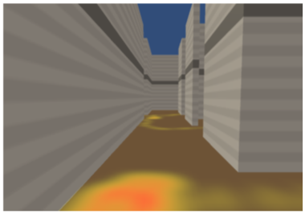

A Comparative Study of Orientation Support Tools in Virtual Reality Environments with Virtual Teleportation | HCI Stuttgart


Authors. Matthias Kraus, Hanna Schaefer, Philipp Meschenmoser, Daniel Schweitzer, Daniel Keim, Michael Sedlmair, Johannes Fuchs
Venue. ISMAR (2020)
Abstract. Movement-compensating interactions like teleportation are commonly deployed techniques in virtual reality environments. Although practical, they tend to cause disorientation while navigating. Previous studies show the effectiveness of orientation-supporting tools, such as trails, in reducing such disorientation and reveal different strengths and weaknesses of individual tools. However, to date, there is a lack of a systematic comparison of those tools when teleportation is used as a movement-compensating technique, in particular under consideration of different tasks. In this paper, we compare the effects of three orientation-supporting tools, namely minimap, trail, and heatmap. We conducted a quantitative user study with 48 participants to investigate the accuracy and efficiency when executing four exploration and search tasks. As dependent variables, task performance, completion time, space coverage, amount of revisiting, retracing time, and memorability were measured. Overall, our results indicate that orientation-supporting tools improve task completion times and revisiting behavior. The trail and heatmap tools were particularly useful for speed-focused tasks, minimal revisiting, and space coverage. The minimap increased memorability and especially supported retracing tasks. These results suggest that virtual reality systems should provide orientation aid tailored to the specific tasks of the users.